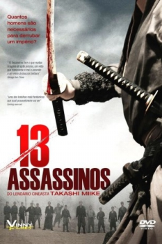

13 Assassinos (2010)


Take up your sword.

Avaliação (TMDb):


7.3/10 (732 votos)
Avaliação (Usuário):
Outro Título:Jûsan-nin no shikaku
País:Japan, 141 minutos
Idiomas falados:Japonês, Português
Gênero(s):Aventura, Drama, Ação
Diretor(s):Takashi Miike
Codec:MPEG-2 (DVD)
Número: 46
Sinopse:
Uma missão suicida é dada a um grupo de assassinos: eles devem eliminar um poderoso líder local.
Elenco:
Koji Yakusho, Takayuki Yamada, Yusuke Iseya, Goro Inagaki, Kazue Fukiishi, Hiroki Matsukata, Tsuyoshi Ihara, Ikki Sawamura, Arata Furuta, Sousuke Takaoka
Tipo de mídia: DVD5,
Legendas: Português
Alugado: Não
Tela: 2.35:1